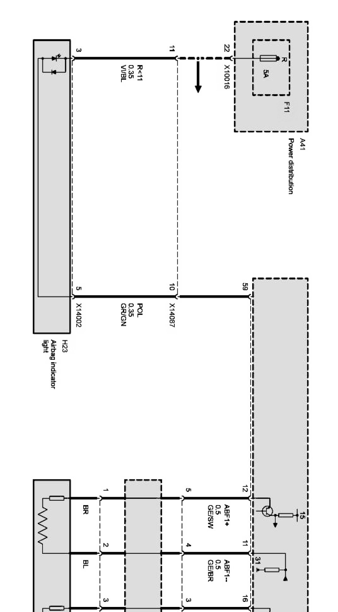
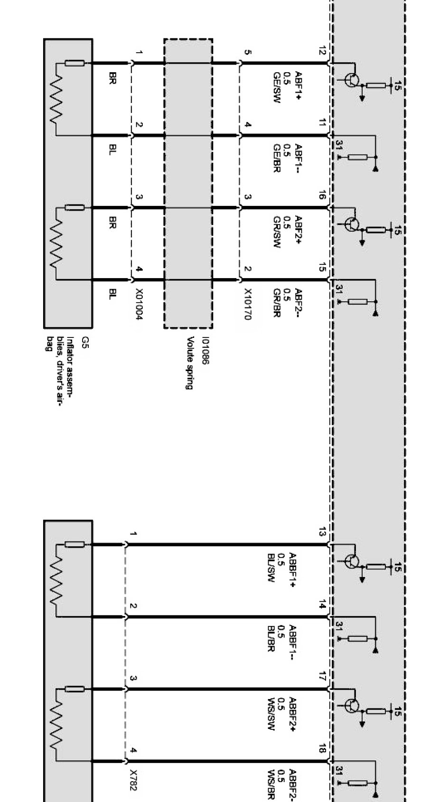
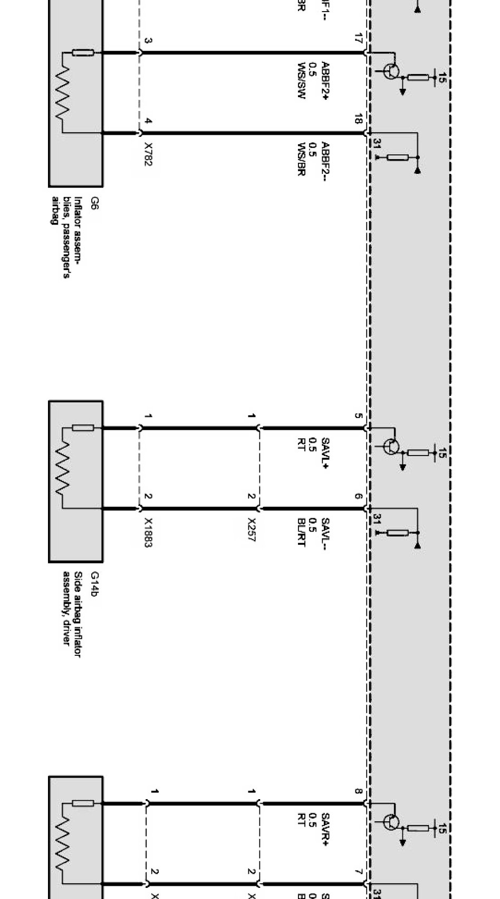
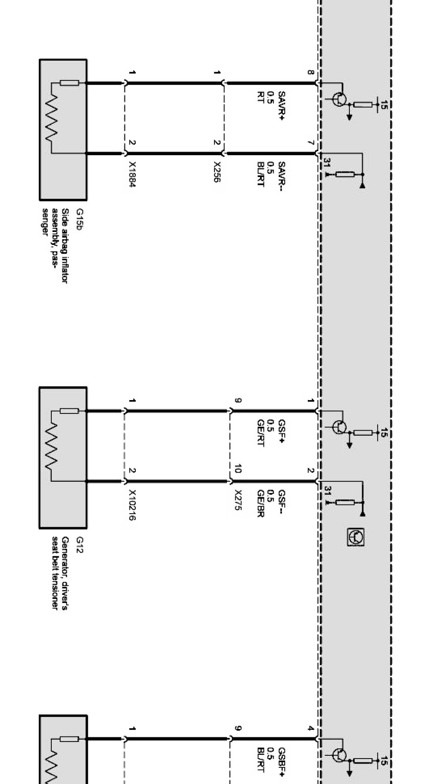
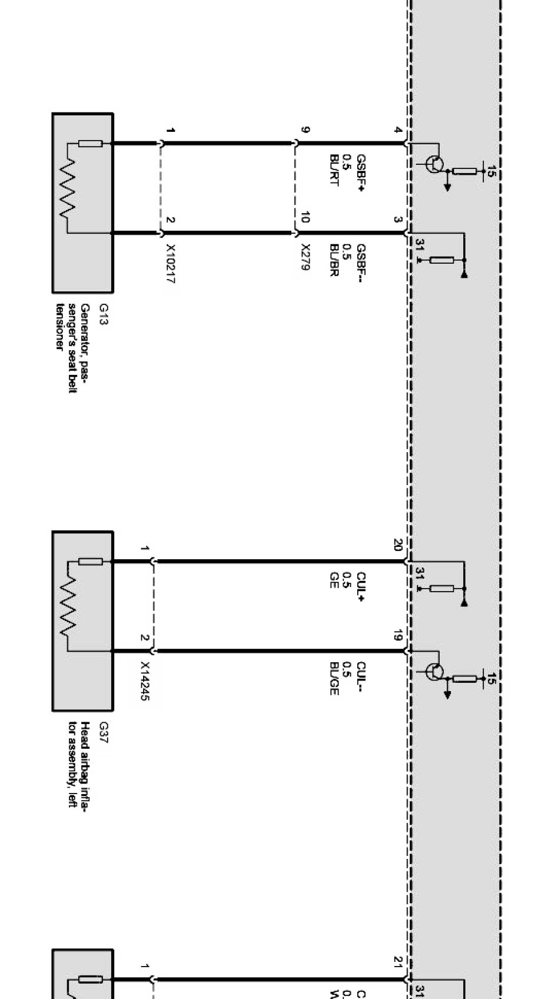
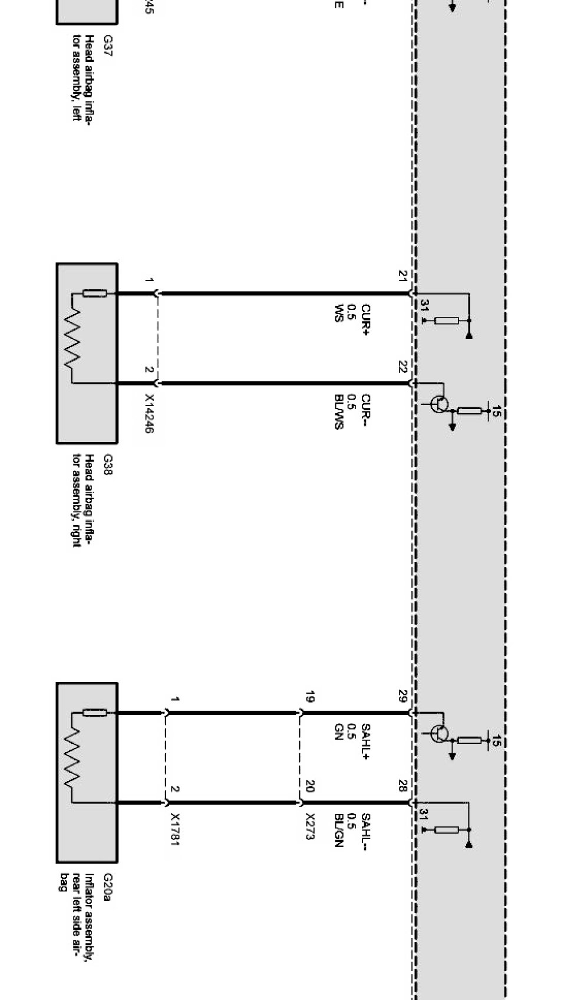
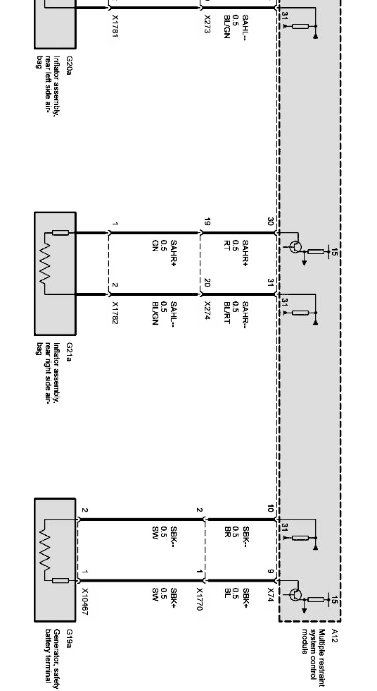

Airbag Triggering Circuits (As of 09/04)
Airbag triggering circuits Part 1:

Airbag triggering circuits Part 2:

Airbag triggering circuits Part 3:

Airbag triggering circuits Part 4:

Airbag triggering circuits Part 5:

Airbag triggering circuits Part 6:

Airbag triggering circuits Part 7:
